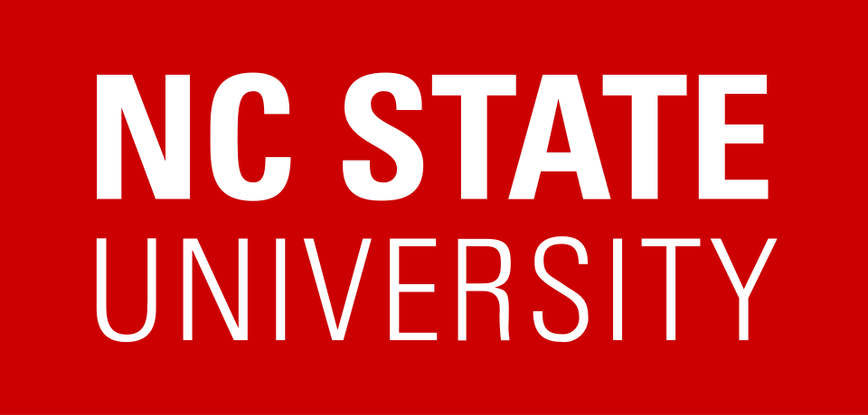

Tim Menzies
prof, phd, cs, se, ai
ACM / IEEE / ASE Fellow. EIC of ASE journal.
timm@ieee.org ·
+1-304-376-2859

I earned my Ph.D. from UNSW (1995) and am a Full Professor at NC State, where I direct the Irrational Research Lab. My work focuses on software engineering for AI — building data-driven, explainable, and intelligent software systems. I co-created the PROMISE repository, showing that small, interpretable AI models can often outperform larger, more complex ones.
300+ papers, 25,000+ citations (h-index=75), 24 Ph.D. students advised. Editor-in-Chief of Automated Software Engineering journal. Associate Editor, IEEE TSE (2010–2026).
$19M in grants from NASA, NSF, NSA, LexisNexis, Microsoft, Meta.
Recent grants: $2.5M from NSF + $1M from NSA for trustworthy compact AI.
Join my lab?
Want to find+fix bugs in real AI/ML? NC State or industry? Join my reading group (every semester). Email me.
Apr 2026: Talk at ICSE'26 on HPO and SE. Blog: Promoted, Not Replaced. Talk at ICSE'26 on shaky causal structures. Paper in JSS on explaining optimization. Paper in TOSEM on LLMs warming-up active learning.
Mar 2026: Paper at FSE'26: How low can you go? Paper in EMSE: Improving LLM Annotations.
Feb 2026: Paper at VERIFAI'26: Exploiting Sparsity.
Jan 2026: Paper at ICSE'26 FOSE: SE Journals in 2036. Paper at MSR: Multi-Objective Optimization Repo. Keynote at VerifAI, France. Keynote at SSBSE'26.

©2026, timm, MIT Licensedesigned.2.last